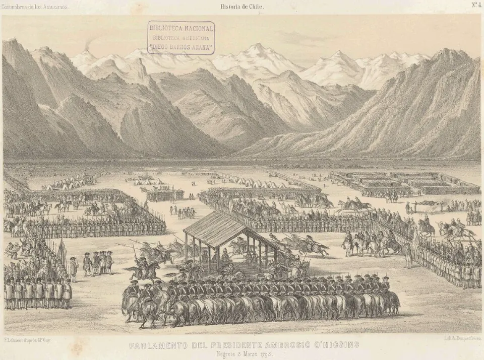

Parlamento de Quilín

A comienzos del siglo XVII, la guerra en la frontera del Río Biobío se combinó con ensayos de paz, como la "guerra defensiva" promovida por el jesuita Luis de Valdivia. El 6 de enero de 1641, el gobernador Francisco López de Zúñiga, marqués de Baides, se reunió en Quilín con numerosos lonkos del Pueblo Mapuche. El acuerdo reconoció el Biobío como límite y la autonomía mapuche al sur del río; a cambio, los mapuche aceptaron liberar cautivos, permitir la entrada de misioneros y no apoyar a enemigos de la Corona, como los holandeses.
La paz fue frágil: hubo nuevos enfrentamientos y en 1655 estalló un gran alzamiento mapuche. Aun así, Quilín inauguró una larga tradición de parlamentos que, junto al comercio y el mestizaje, convirtió la frontera en un espacio de contacto y negociación durante toda la Colonia. Su alcance se discute hasta hoy: para muchos historiadores y organizaciones mapuche fue un tratado que reconoció a una nación autónoma; otros lo interpretan como un pacto dentro de la política colonial, que la Corona aplicó según su conveniencia.
Versión para niños
Después de muchos años de guerra, españoles y mapuche se reunieron en un lugar llamado Quilín, en enero de 1641. Allí hubo discursos, ceremonias y comidas, y llegaron a un acuerdo: el río Biobío sería la frontera. Al sur, el Pueblo Mapuche seguiría viviendo libre en sus tierras. A estas grandes reuniones se les llamó parlamentos. La paz no siempre duró, pero los parlamentos se repitieron durante toda la Colonia.
Para maestros
Nivel sugerido: 5° básico
Objetivo: Comprender que la relación entre españoles y mapuche en la frontera del Biobío incluyó guerra, pero también negociación, comercio y mestizaje.
Preguntas para la clase:
- ¿Por qué ambas partes podían estar interesadas en un acuerdo de paz en 1641?
- ¿Qué diferencia hay entre una frontera de guerra y una frontera de contacto?
- ¿Por qué hoy existen distintas interpretaciones sobre el valor de este parlamento?
Actividad (20–30 min): En un mapa, los estudiantes ubican el río Biobío, los fuertes españoles de la frontera y el territorio mapuche. Luego, en grupos, escriben qué ganaba y qué cedía cada parte con el acuerdo de Quilín y lo comparten en un plenario.
Fuentes sugeridas: Memoria Chilena; Museo Chileno de Arte Precolombino; Biblioteca Nacional Digital.
Objetivos de Aprendizaje (Currículum Nacional)
- 5° básico · HI05 OA 07 Explicar y dar ejemplos de las distintas formas en las que españoles y mapuches se relacionaron … vida fronteriza y sistema de parlamentos
- 8° básico · HI08 OA 12 Analizar y evaluar las formas de convivencia y los tipos de conflicto … el consiguiente desarrollo de una sociedad de frontera durante la Colonia en Chile
Revisión humana pendiente. Cómo se revisa · Reportar un error
Cómo citar: Historia de Chile. (2026). Parlamento de Quilín. En Historia de Chile: atlas y línea de tiempo. https://moises-salgado.github.io/historia-de-chile/momento/parlamento-de-quilin.html